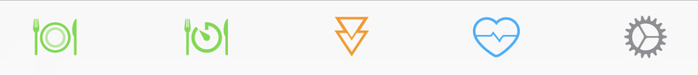
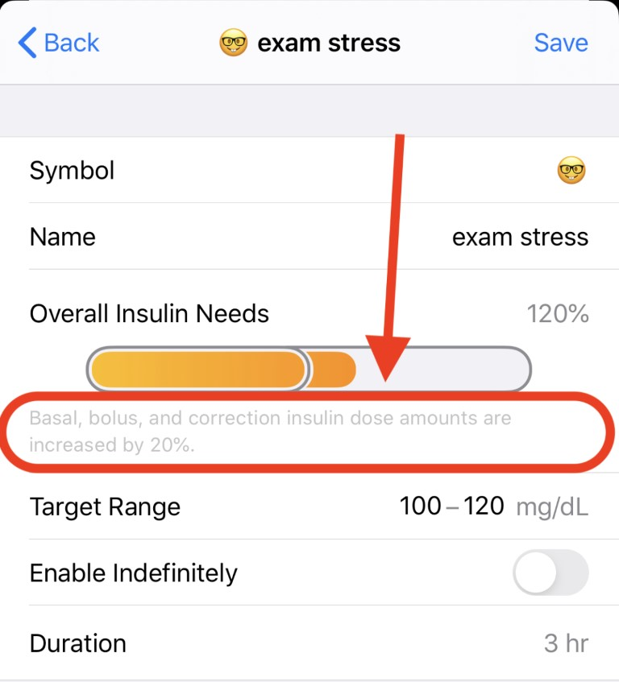
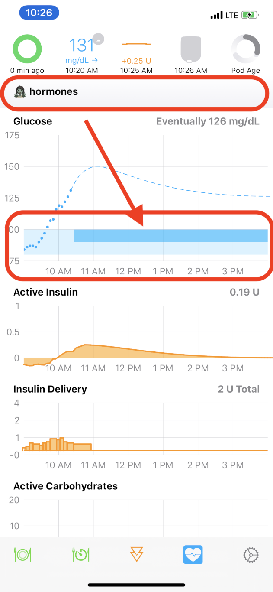

Overrides¶
Overrides were developed as a method of letting Loop know that you have a situation affecting your overall insulin needs, without needing to manually edit your basal schedule/ISF/carb ratios individually. Examples where this can be helpful include hormone cycles, steroid medications, exercise, and other situations which may temporarily (either shorter or longer term) affect your underlying insulin needs.
Override presets are (1) optional and (2) can be configured within Loop's workout icon (the little blue heart icon in the Loop toolbar). Once override presets are created, they can be turned on/off by using the workout icon as well.

How overrides work¶
Overrides allow you to specify an overall insulin needs adjustment, a target range, and a duration for the override with each preset. The overall insulin needs adjustment is an adjustment to your scheduled basal rates, carb ratios, and insulin sensitivities all together. In other words, overall insulin needs percent will affect boluses, temp basals, and correction recommendations.
Notice the fine-print below the orange bar showing the overall adjustment graphic..."Basal, bolus, and correction insulin dose amounts are increased by 20%" in the example with a 120% overall insulin needs adjustment. So, 100% overall needs means no multiplier will be applied to your basal, insulin sensitivities, or carb ratio...but you could still use a 100% preset simply to define a different target range for a period of time.
Recapping: If you set an overall insulin needs adjustment below 100%, you are telling Loop that you are more insulin sensitive and will need a lighter touch with all things insulin. If you set an overall insulin needs adjustment above 100%, you are telling Loop that you are less insulin sensitive and will need a more aggressive touch with all things insulin.

How overrides do NOT work¶
Overrides will work while you are Looping. Sounds obvious, right? But, the thing to remember is that the adjustments (multipliers) that overrides make are not saved back to your Medtronic pump or Omnipod. They only exist in the Loop app.
If you walk away from iPhone and/or RileyLink...
If you stop Looping (i.e., walk away from your gear), your existing temp basal will complete the remainder of whatever is left of its original 30 minutes and you will return to scheduled basal rates AS DEFINED IN YOUR LOOP SETTINGS. Your adjusted needs as set-up in any override will not continue if your Loop is not running properly. So you cannot set a 50% override and then hop in the ocean for a 2-mile swim without your iPhone and RileyLink and expect decreased basals of 50%. Just be aware that in situations where you need prolonged lower basals while away from Looping gear, you will need to edit your scheduled basals.
Overrides also should not be used as a temporary sledgehammer to force Loop into an immediate suspend. There have been users, for example, setting a 10% override to force Loop to suspend. Then they've decided to manually bolus for food during the time that override is active. Loop will be assuming you only need 10% of your usual insulin needs...so the insulin you delivered to cover the meal will be perceived as ridiculously too much and your predicted BG curve will turn very, very low for the next 6 hours or so. Instead of trying to use a 10% override to force Loop into a suspend, you are better off simply issuing a suspend command to the pod and setting a reminder in your phone to resume insulin deliver later. Another option would be (assuming you aren't going out for a swim away from your Loop gear)...just let Loop do its thing and suspend insulin delivery via temp basals as needed.
Making your override presets¶
To make your override presets, simply tap on the workout icon. Then click the + sign in the upper right corner to start a new preset entry.
All the rows need to be filled out in the preset in order to save your new preset
- Pick an emoji
- Enter a name for the preset (the default "Running" is just a placeholder)
- Enter an overall insulin needs adjustment (10% to 200% in increments of ten percent, with 100% being your regularly scheduled insulin needs)
- Enter a target range (make sure to enter the target range low-high or you could crash your app...do not enter the range high-low.) If you do not enter a target range, Loop will use your existing scheduled target ranges.
- Select whether you want the override to run indefinitely or for a finite time.
When you've made all those adjustments, save the the preset using the "Save" button in the upper right corner.
Activating your override¶
To enact your override preset, you simply tap on the workout icon toolbar and select your override from your list of presets that you programmed in previously in the step above.

The heart will be highlighted in a blue square while active and a banner notification will appear at the top of the Loop's main screen. Additionally, you'll see a darker blue target area indicating the override's target range and duration in your Loop's blood glucose graph.

You can also setup a future start time for the override by selecting the override preset and setting the "Start time" row. Save the future override by pressing the "Enable" button in the top right corner. A future override can be very helpful, for example, to set an exercise override the night before your workout. Set your exercise override to activate 2 hours before you wake up for your 5am spin class in the morning. You'll wake up with less insulin on board and at your desired exercise targets, without needing to set an alarm to wake up simply to set an override.
Deactivating your override¶
This is simple...just tap the heart icon to turn off your override at any time. Override presets that have been programmed with a finite duration will automatically deactivate when their time's duration reaches the end.
Remote overrides¶
You can also use your Nightscout site to activate/deactivate your Loop's override presets. Remote overrides require Apple Push Notifications service, and that is only available on paid accounts. To accomplish this, you will need to do some legwork as outlined on this page for how how to setup Remote Overrides in Nightscout and you will need to be using a paid Apple developer account.